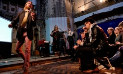

“Para aquellos que creen en Dios, la mayoría de las grandes preguntas ya han sido respondidas. Pero para aquellos de nosotros que no pueden aceptar fácilmente la fórmula de Dios, las grandes respuestas no permanecen escritas en piedra. Nos ajustamos a las nuevas condiciones y descubrimientos. Somos flexibles. El amor no tiene que ser un mandato ni la fe una sentencia. Yo soy mi propio dios. Estamos aquí para desaprender las enseñanzas de la iglesia, del estado y de nuestro sistema educativo. Estamos aquí para tomar cerveza. Estamos aquí para matar la guerra. Estamos aquí para reírnos de las probabilidades y vivir nuestras vidas tan bien, que la muerte temblará antes de llevarnos”.
—Charles Bukowski
Si eres atea probablemente eres satánica, eso es lo primero. Tampoco tienes ‘moral’. Estás depresiva y no te gusta la vida; si eres atea, estás mal, odias a dios y a los religiosos, necesitas un cura, rabino, imam… Si sigues los avances científicos, peor aún, si eres científica, probablemente odies la naturaleza, nos quieres matar a todos con alimentos genéticamente modificados y vacunas, deseas alejar a la humanidad de su medio natural y estás cegada porque tu dios es la ciencia… Si eres escéptica crees que la verdad es la negación de todo, piensas que las evidencias son suficientes y muestras un desdén particular hacia todo el crédulo dentro y fuera de la Nueva Era… Si no eres espiritual probablemente eres una materialista, reduccionista irracional, que no ha descubierto la esencia de la vida ni permite que su alma vuele libre por el universo. Negar la espiritualidad es negar la consciencia neuronal, es evitar a toda costa sentir lo que es realmente vivir, despertar otros estados de alerta en el cerebro…

Eres una “antitodo”.
En distintos grados, colores y disfraces, palabras similares continúan orbitando mi existencia, obligándome a crear frescas explicaciones que brinden de forma sutil, esas otras formas honestas de pensar. Sin embargo, es como si le hablaras al sol esperando más que su habitual brillo. Y ya no es sólo no creer en dios ni tener religiones, es divulgar ciencia y escepticismo, ese combo que, de extraña forma, pinta un retrato distinto sobre tu persona.
“Ateísmo es mucho más que el conocimiento de que los dioses no existen y que la religión es, o bien un error o un fraude. El ateísmo es una actitud, un estado de ánimo que ve al mundo de manera objetiva, sin miedo, siempre tratando de entender todas las cosas como parte de la naturaleza”, nos dice Emmett F. Fields.

Indudablemente, soy parte de la naturaleza. La evolución nos ubica en ella satisfactoriamente. No obstante, me gusta no tener que vivir dentro de su cruel y dulce dominio como mis ancestros. Aunque detesto la absurda manipulación del medio y entiendo que muchas veces es un efecto de resultados que hoy consideramos positivos para la especie, aún así, disfruto enormemente la vida no salvaje, tener antídotos para los venenos, vacunas contra virus, antibióticos que maten bacterias y doctores que puedan repararme si me rompo, tener duchas, internet, inodoros, lavaplatos, sentirme libre de almas, ritos mágicos, espíritus, dioses y de no sucumbir a tontas falsedades como el horóscopo o la lectura del Tarot. Nutrir el cerebro mientras creces es buena idea, entrenarlo para “ver y pensar antes de creer”, escribió una vez Michael Shermer.
El otro día leía un párrafo escrito por un joven pastor anónimo que decía que era imposible detener el crecimiento del ateísmo, lo único que los cristianos podían hacer era esperar que los ateos no los trataran igual como los cristianos los trataron a ellos. Y es la verdad, el llamado ‘nuevo ateísmo’ es simplemente tener voz, ya sea impulsada por la ciencia, la injusticia o la lectura racional de cualquier libro sagrado. Parafraseando a Isaac Asimov, leer la Biblia de forma correcta y detallada es la fuerza más potente, jamás concebida, para impulsar el ateísmo. El nuevo ateo no sólo sale del armario sino que lo hace con un micrófono virtual y hay millones conectados; decide que ya no importa que los demás se molesten pues ellos nunca preguntaron si molestaban sus creencias.
Pertenezco a una generación que conoció a ese nuevo ateísmo ya siendo atea, conoció la ciencia ya siendo atea, conoció el escepticismo sin tener dioses. Leer a Randi, Sagan, Hitchens, Shermer, Dawkins y demás, sólo confirmaba el pensamiento de tantos otros autores que antes de ellos me enseñaron por qué no creían en dioses. Nunca nadie me explicó satisfactoriamente por qué el mundo andaba patas arriba si realmente tenemos dioses generosos y omnipotentes (hasta envían hijos que mueran por nosotros). No existe explicación, no hay forma de argüir a favor de tantas atrocidades… inventar demonios como justificación es otra terrible excusa.
Por eso, siempre llegamos a la pregunta original: ¿por qué cree la gente? Revisiones del tema conforman La lupa herética, en ella veo la evolución misma de mi pensamiento sobre estos temas; la idea básica se mantiene allí, creciendo, podándola con información reciente, aprendizajes actuales, evidencias recogidas y aplicadas; manteniendo la flexibilidad ante la incertidumbre.
Necesitamos creer, ha sido y es evidente; hoy, sin embargo, tenemos opciones (algunos jóvenes y adultos) sobre qué cosas creer y por qué, es posible utilizar ese viejo mecanismo cerebral para conductas actuales, vinculadas apropiadamente con la información y el conocimiento que trae la época.
Sí, indudablemente, he apartado esos estereotipos, he leído los discursos y discutido las sentencias; intento no crear dogmas pues paralizan y he aprendido a disfrutar con los cambios en la ciencia; “eso que antes pensabas era así, pues fíjate, ¡no lo es!”. Viejos discursos que ahora confunden con estados cerebrales y que liga la espiritualidad con las conexiones neuronales junto a diferentes estilos de vida, junto a nirvanas, luces, una mezcla de rezos con estados distintos de felicidad que provocan emociones justificadas con ilustraciones sobrenaturales. Por un lado tenemos a Chopra y por otro a Harris, de lo mágico a lo confuso. Lo espiritual ahora tiene otro vestido (ha sido cambiado varias veces desde que nació la palabra: desde el ‘aliento’ hasta la ‘paloma’) y muchos desean ahora alejarlo de la magia, de la Nueva Era y el Chi, conectarlo con el cerebro, con una vida conformada por actividades específicas, nutriciones particulares y determinadas formas de ser. Sam se lo quita a Deepak e intenta despojarlo de lo sobrenatural para indicarlo a más personas, Deepak lo toma de vuelta cubriéndolo con alguna otra magia cuántica y lo revende. Al ciclo del pro-todo.
No entiendo la necesidad; lo más sano sería continuar por el camino que la neurociencia y la neurología ya comenzaron a transitar, esos caminos ya tienen sus nombres; de hecho, si quieres inventarles otros más ‘pegajosos’, más vendibles, por lo menos básate en ellos, es menos confuso, especialmente si ya eres un neurocientífico, como Harris. Los caminos de la existencia individual están hechos de material más complejo que el espaciotemporal mismo. El colectivo de la especie produce cantidades numerosas de ellos, ninguno está completamente garantizado. Precisamente, si tienes eso en mente, a lo mejor sobrevivas las caídas y el tiempo perdido; son parte del sistema, tu trabajo es repararlos y seguir.
Sin embargo, es un acceso difícil. Como todos los senderos humanos, ninguno es lineal y muchas personas que alguna vez pensaste andaban por el mismo, toman otro rumbo y comienzan a explicarse de otra manera, una con la que ya no puedes relacionarte. Usualmente no estoy de acuerdo con todo lo que dice y hace una persona (es lo más normal, a veces ni siquiera estoy de acuerdo conmigo misma), sin embargo, es posible mantener rangos de afiliación con ciertas ideologías, discursos y debates aunque no concordemos con todo; siempre llega el momento de duda, la pausa, el segundo para decir: “Bueno…”

Las ideologías en el planeta Tierra cambian. Variables como el progreso en la investigación, inversión en resultados positivos, niveles de educación en la población, posición política de la cultura, entre otras, influirán directamente con las orientaciones de las avenidas disponibles; en algunas corren miles de millones, en otras unos cuantos miles, si te interesa la vía que recorre tu existencia vas a leer todo lo que puedas sobre ella, concentrado en los resultados de aplicaciones y evidencias sobre su naturaleza, desarrollo y existencia… Es lo que hace, precisamente, que muchas veces pongas la direccional.
Un ego inflado derrumba al más crítico
¿A qué edad dejaste de creer en monstruos?
Estos días han empujado creyentes hacia mi espacio personal. Mensajes y comentarios en la aldea virtual despertaron otro momento de prédica en mi mundo ateo; no es algo distinto ni ocurre por primera vez, Ferney, Marcelo y yo hemos visto tantos mensajes de creyentes que decidimos crear una sección sólo para ellos. Allí dicen rezar por nuestras almas, sienten lástima por nuestras vidas, nos mandan al infierno, nos insultan, se burlan, nos llaman ignorantes, todo en el nombre de dios, por supuesto. Sin embargo, nosotros seguimos siendo los ‘satánicos’…
Más que infantil, si me preguntan, ¿a qué edad dejaste de creer en monstruos?
En esta ocasión, la aproximación de la fecha de la muerte de Jesús ha renovado la prédica en algunos cristianos, quienes se han acercado por mi hábitat para entregarme invitaciones para la celebración de la crucifixión. ¡Religiones prosaicas!… Finalmente, me atraparon una mañana en el porche, muy simpáticos, por cierto, (por eso nunca he podido ser irrespetuosa con estas personas, aún cuando están haciendo algo que si yo lo hiciera con el ateísmo me crucifican), me entregaron sus panfletos, orgullosos y deseosos por el gran evento que cada año protagoniza este personaje que hoy, dos mil y tantos años después, no tenemos pruebas de si realmente existió alguna vez. Los fideos del espagueti volador se mezclaron entre mis neuronas, sonreí durante todo el breve encuentro. Les devolví los panfletos, apreté las manos de una de ellos y les dije dulcemente, “mil gracias, soy atea, no me interesan estos ritos. Igual espero que tengan un momento precioso entre ustedes”.
Por otro lado, he despertado el sentimiento de maternidad en dos señoras (aunque a lo mejor sean más jóvenes que yo, no lo sé), quienes me han asegurado en las últimas semanas que si realmente conociera a su dios particular, me sentiría mejor con mi vida. ¡Vaya!
En primer lugar, el problema es asumir que con un dios (o ninguno) tu vida sería mucho más satisfactoria. Si te ayuda y ayuda al otro, pues bellísimo, pero no toques mi puerta esperando que comience a pensar como tú “porque para ti es lo mejor para mí”… Asumir que la satisfacción del otro se encuentra en el mismo lugar que la tuya es una equivocación enorme.
Por otro lado, mi objetivo no es ‘convertir’ a nadie al ateísmo, cuando eso ocurre, ocurre solito y disparado por numerosas variables; catalizar, a lo mejor, transmitir, afirmarme, analizar, razonar, hacer que otras perspectivas se hagan cargo de su lugar de forma responsable. Completamente opuesto a la plataforma que utilizan los religiosos para ganar miembros en sus iglesias; son negocios. A lo mejor, precisamente por ello, muchos ateos han comenzado a organizar las de ellos. Una mala idea, en mi opinión, pero es probable que les genere dinero, esperemos que su alcance sea más positivo que la simple moda o una tendencia falsa, superficial, negativa y vacía.
En todos los quehaceres humanos, un ego inflado derrumba al más crítico. No me gusta sentirme arreada y todavía me sorprende la falta de lógica en los cerebros, me disgustan las extremas-membresías que te obligan a seguir reglas y acatar normas y elaborar altares para individuos.
La historia está repleta de fascinantes individuos que originaron admirables ideas, producciones, inventos, descubrimientos y comportamientos, en vez de adorarlos sin conocerlos, aprendamos de ellos, abramos sus libros, vayamos más allá de títulos y subtítulos y programas coloridos; sólo así vamos a lograr madurar necesarias sinapsis entre las neuronas.
Hace mucho que la idea del ateísmo caló en el cerebro humano, milenios antes de conocer el genoma, el internet, la Gran Explosión y la neurociencia; desde entonces ha sido ahogada, torturada, prohibida y silenciada miles de veces. Para mí, es otra evidencia más de las falsedades religiosas; si tus dioses son verdaderos y no te importa quién crea o no, no tendrías que gastar tanta energía ni hacer tanto daño para mantenerte. Pero es un costo efectivo, sólo así mantienes el alto nivel para poder subsidiarlo una y otra y otra vez…
Volver al índice de la Lupa Herética
© 2008-2021 Glenys Álvarez y Sin Dioses. Prohibida la reproducción con fines comerciales.
Comentarios
Comments powered by Disqus